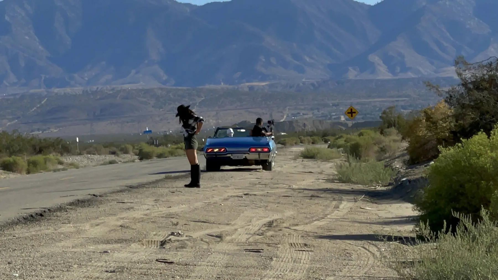
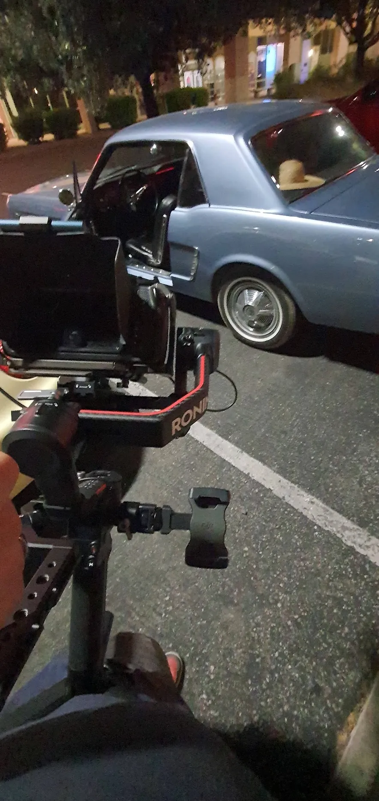
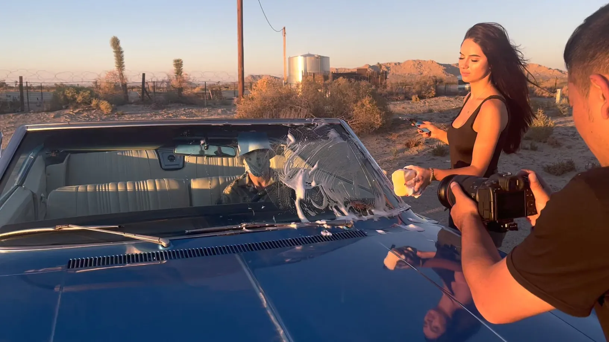
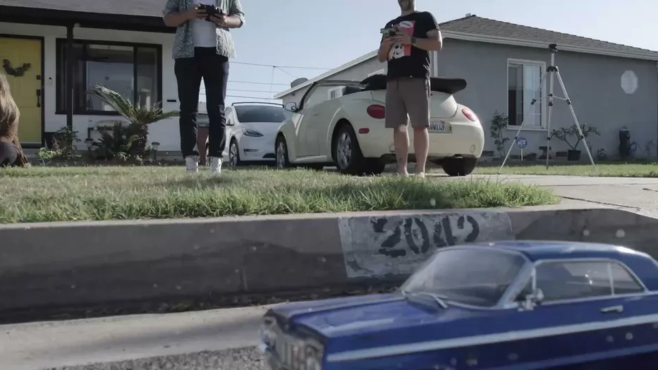
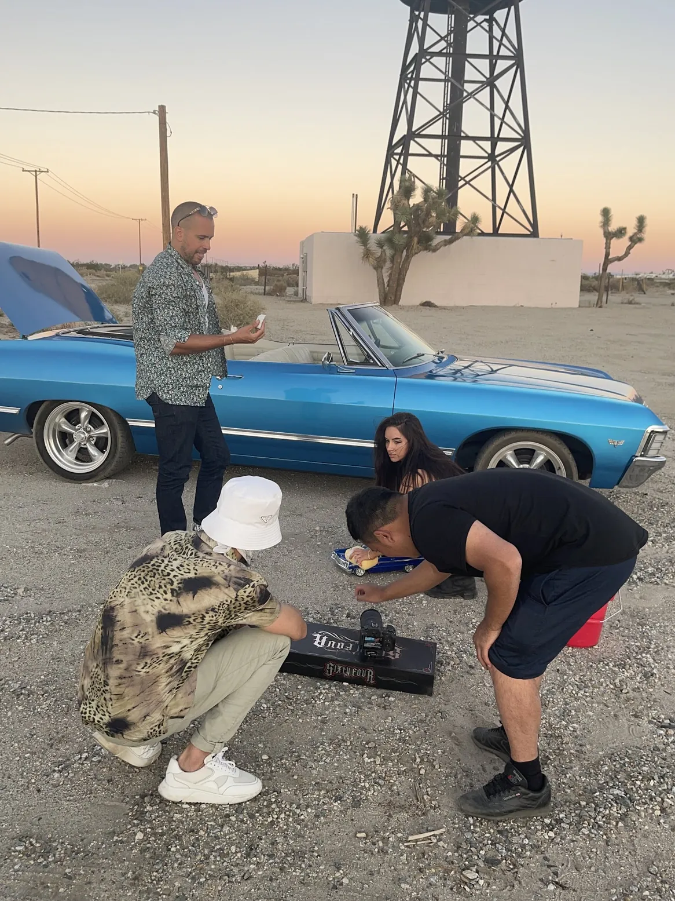
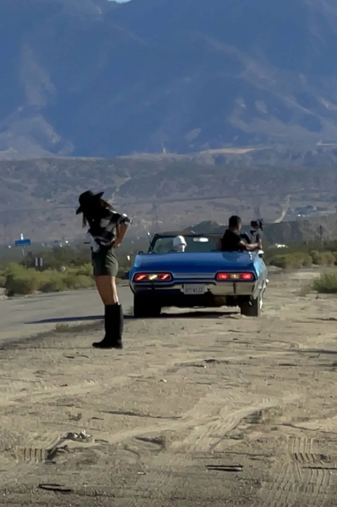
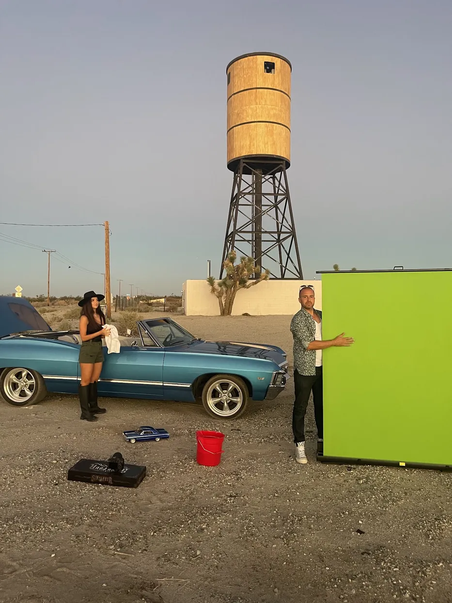

Loko — Karna
A video for Loko, shot in the desert a few hours out of Los Angeles. A hired blue convertible, a miniature of the same car shot separately, a drone and a green screen panel. Mr. Pinoux assistant directed, then took the effects and the grade.
Un clip pour Loko, tourné dans le désert à quelques heures de Los Angeles. Un cabriolet bleu loué, une miniature de la même voiture tournée à part, un drone et un panneau de fond vert. Mr. Pinoux était assistant réalisateur, puis a pris les effets et l'étalonnage.
May 2021, a few hours out of Los Angeles. A blue mid-sixties convertible was hired for the day and driven out to a stretch of desert road with a water tower on it, and most of the video was built around that one object — parked, driven, leaned on, shot from the back seat.
Mai 2021, à quelques heures de Los Angeles. Un cabriolet bleu du milieu des années soixante a été loué pour la journée et emmené sur un bout de route désertique avec un château d'eau, et l'essentiel du clip s'est construit autour de ce seul objet — à l'arrêt, en roulant, adossé, filmé depuis la banquette arrière.



The desert gives about forty minutes of the light everyone wants, and it gives it twice a day. The photographs are almost all taken inside those two windows — which is why the schedule matters more than the shot list on a job like this.
Le désert donne à peu près quarante minutes de la lumière que tout le monde veut, et il les donne deux fois par jour. Les photos sont presque toutes prises dans ces deux fenêtres — c'est pour ça que sur un tournage pareil, le plan de travail compte plus que la liste des plans.




There was also a miniature of the car, shot separately on a suburban street. Which is where the grading work came from: a model and a real vehicle photographed on different days, in different light, have to end up the same blue. Matching those two is not a colour correction so much as an argument you keep having until it stops.
Il y avait aussi une miniature de la voiture, tournée à part dans une rue résidentielle. C'est de là que vient le travail d'étalonnage : une maquette et un vrai véhicule photographiés des jours différents, dans des lumières différentes, doivent finir du même bleu. Faire correspondre les deux, ce n'est pas tant une correction colorimétrique qu'une discussion qu'on reprend jusqu'à ce qu'elle s'arrête.
Mr. Pinoux was assistant director on this one rather than behind the lens for all of it — preparing what the Steadicam would need, flying the drone, and taking the effects and the grade afterwards. A green screen panel travelled out to the desert too, propped beside the car for whatever had to be replaced later.
Mr. Pinoux était assistant réalisateur sur ce projet plutôt que derrière l'objectif tout du long — préparer ce qu'il faudrait au Steadicam, piloter le drone, et prendre les effets et l'étalonnage ensuite. Un panneau de fond vert a fait le voyage jusqu'au désert lui aussi, calé à côté de la voiture pour tout ce qui devrait être remplacé plus tard.